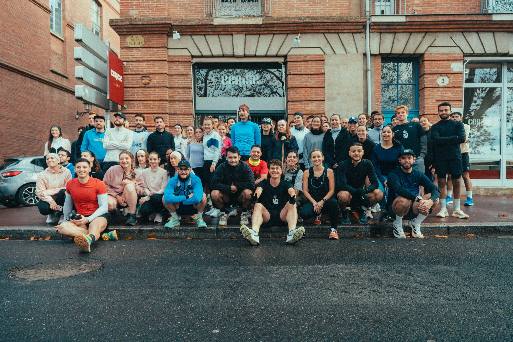
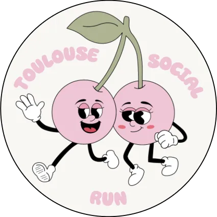
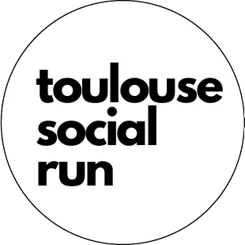
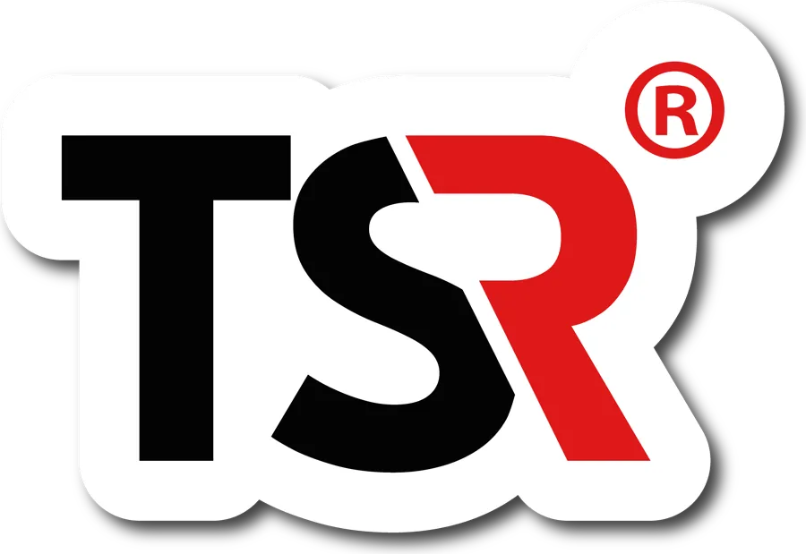
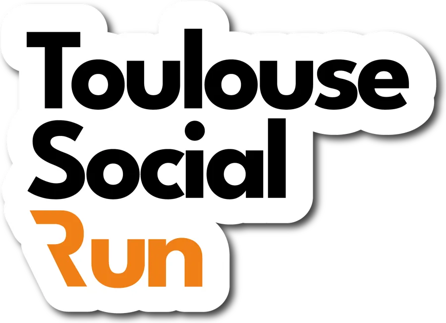
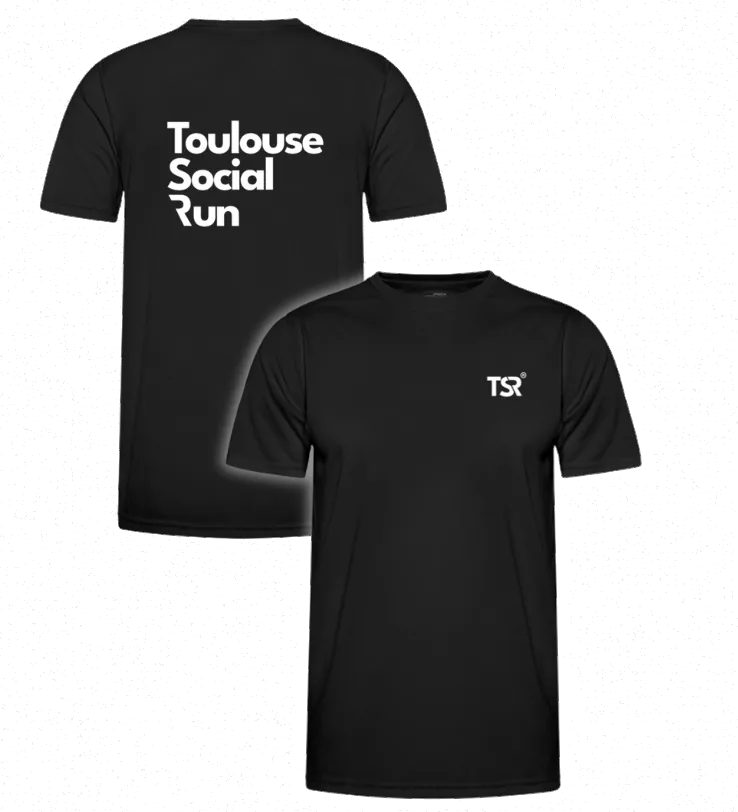
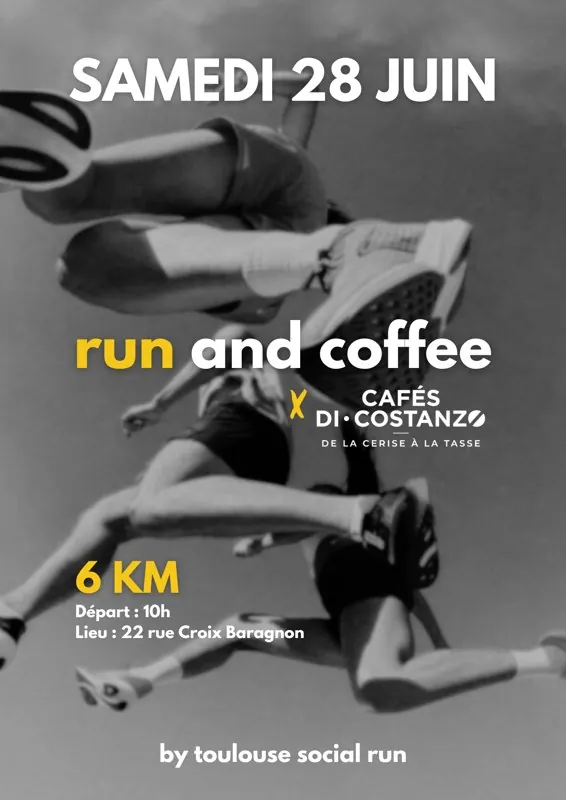
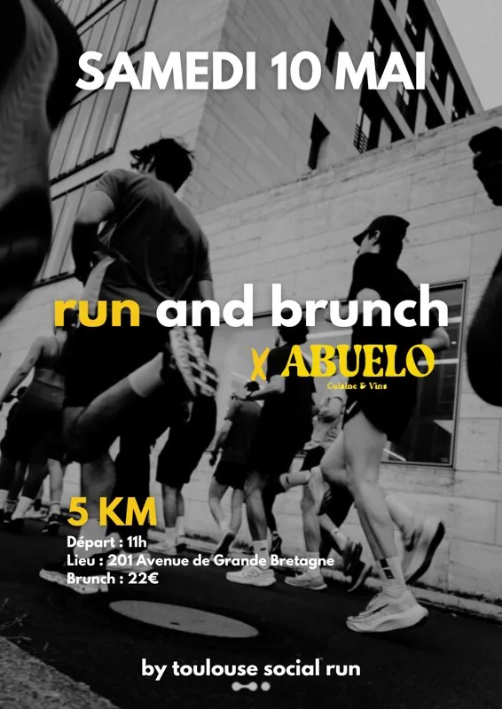
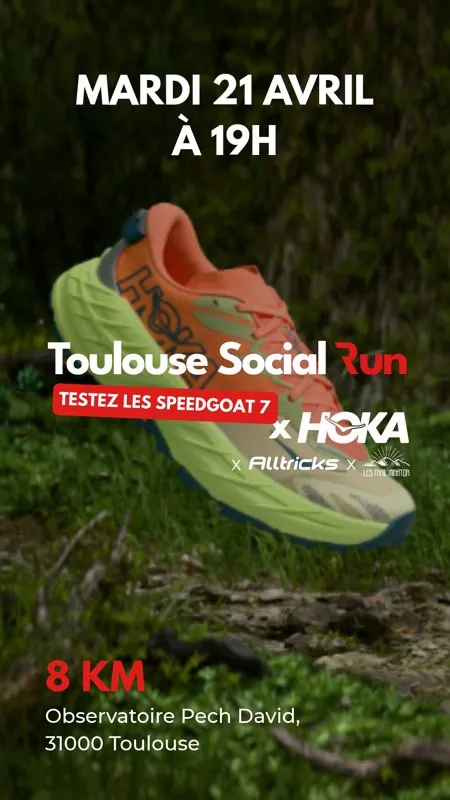
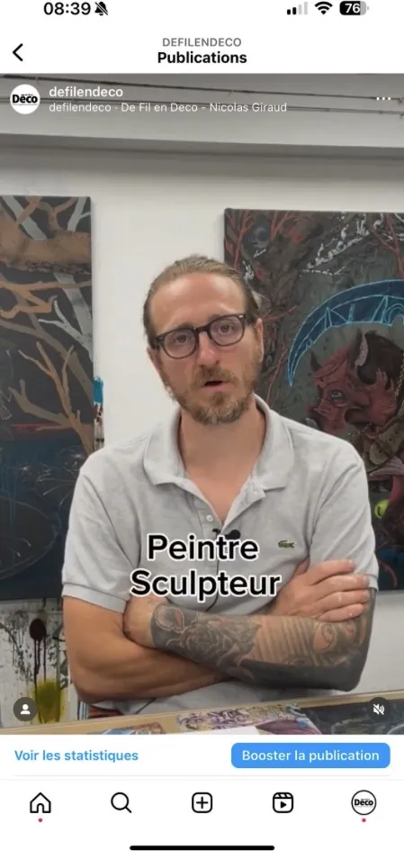

← Tous les projetsToulouse Social Run
le running club qui court ensemble
Chargée de communication & graphiste, bénévole, de 2024 à 2026.
Au départ, c'était un projet d'école… devenu une vraie association ! Un club de course gratuit et ouvert à tous, où chaque run finit par un moment ensemble. Moi, j'y gère la com et l'identité visuelle.
- Identité visuelle
- Direction artistique
- Social media
- Partenariats
- Événementiel
- Merch
- Community management
Courir ensemble
Ce qu'on raconte, ce n'est pas juste une course : c'est la ville, les rencontres et ce qu'on partage après.
Un brunch, un cours de pilates, des cookies… le moment social change à chaque fois !


Nos formats
- Run & brunch
- Run & pilates
- Run & cookies
- Run & café
- Run pizza
- Run test
- et plein d'autres
L'identité
Des cerises dessinées au logo actuel, j'ai fait grandir l'identité en même temps que le club, jusqu'à une vraie charte complète.
- 3 logos : logotype, principal, secondaire
- La charte : 6 couleurs, 2 typos
- Les stickers et le t-shirt technique

Sept. 2024le premier logo
Févr. 2025un logo plus sobreLa charte de décembre 2025
Logotype, logo principal et logo secondaire
Nouvelle DA
Pour annoncer la nouvelle identité, j'ai fait un carrousel panoramique qui se swipe d'une slide à l'autre… puis la DA a pris vie sur le terrain.
- Carrousel d'annonce en 6 slides
- Stickers en 3 couleurs
- T-shirt technique pour les coureurs


Le carrousel d'annonce, décembre 2025 : 6 slides qui se suivent jusqu'au « Rejoins-nous ! »




Les stickers, en trois couleurs
Le t-shirt technique : TSR® côté cœur, logo principal au dos
Événements & runs partenaires
Brunch, pilates, cookies, pizza, run test… chaque run partenaire a son affiche, et avec la nouvelle DA, un gabarit reconnaissable.






Avant (2025) et après la nouvelle DA (2026)


Ils ont couru avec nous
- Alltricks
- Hoka
- Chullanka
- Nnormal
- Näak
- Totobello
- Oh My Cooks
- Diago
- Cafés Di Costanzo
- Abuelo
- Waycy
- Kilomètres Dehors
- + plein d'autres
Communauté
Instagram, Strava, TikTok, le groupe WhatsApp… j'ai fait vivre chaque canal avec la même énergie, et la communauté a suivi !
abonnés en mai 2026, contre 637 en juin 2025
membres du club en mai 2026, contre 435 en juin 2025
membres du groupe en mai 2026, contre 152 en juin 2025
abonnés en mai 2026, contre 447 en juin 2025
Stratégie des moyens
Owned
- Instagram, TikTok
- Strava, Threads
- WhatsApp, biosite
- Google Business
Earned
- Partenaires
- Bouche à oreille
- Relais des coureurs
- UGC, presse
Paid
- Site internet
- Merch
